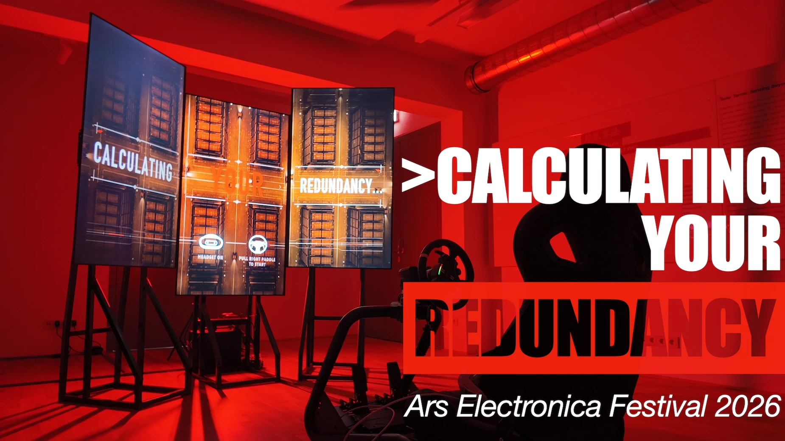
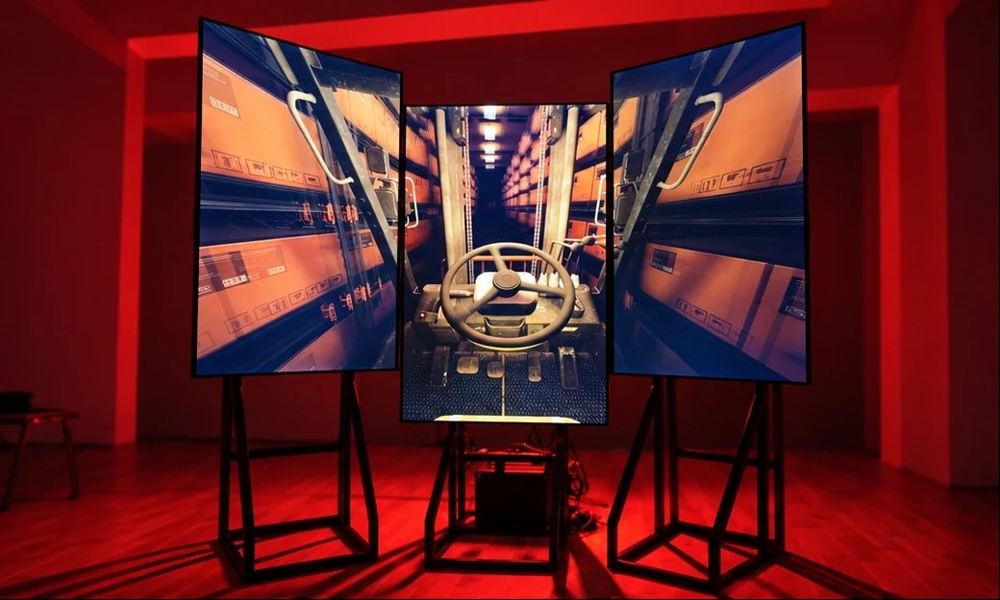
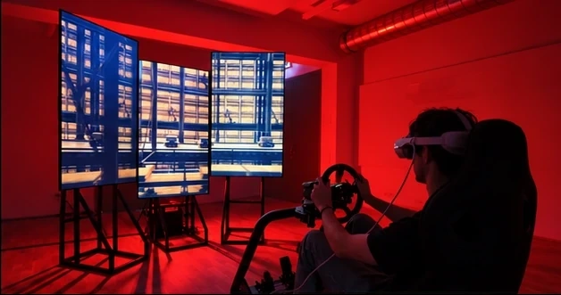
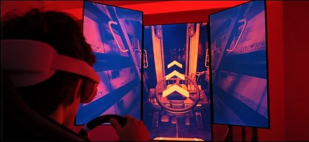
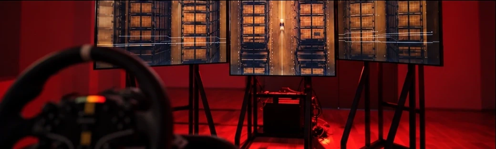
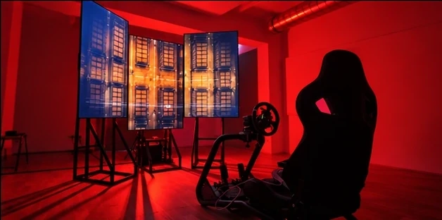
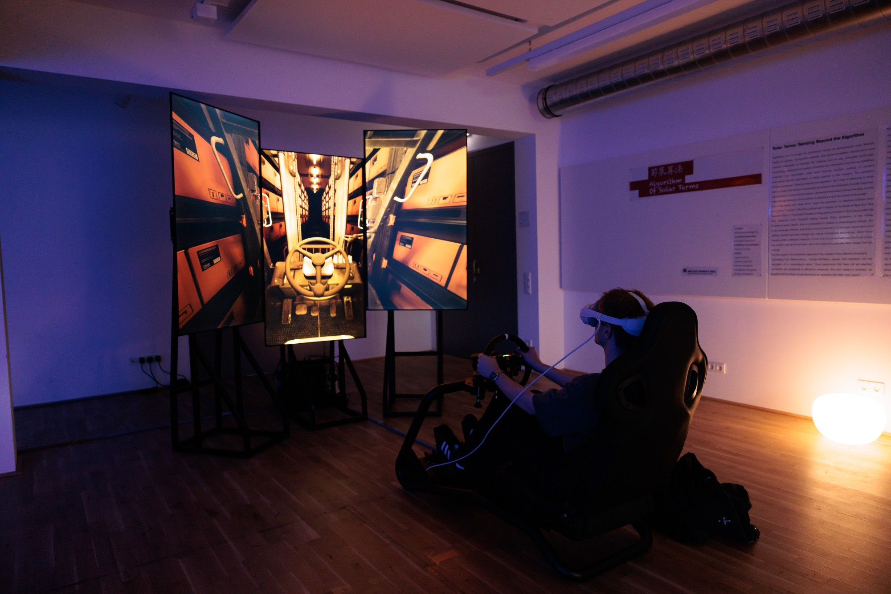
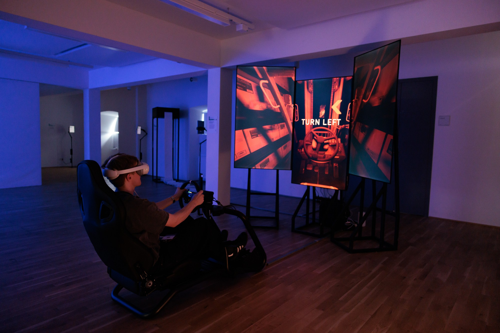
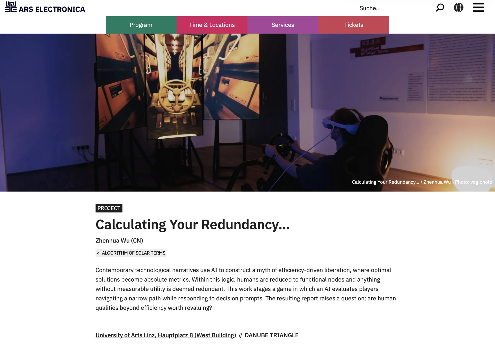
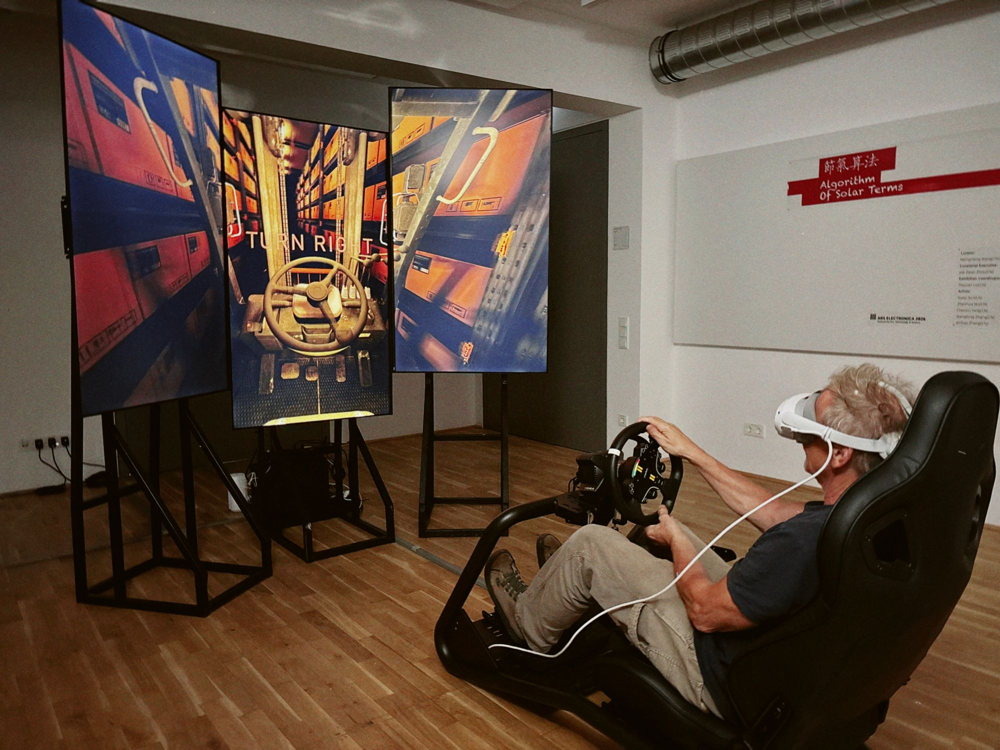

Calculating Your Redundancy...
你的冗余正在结算……
一场由 AI 主导的驾驶测试：系统不断干扰，你不断修正——你们共同造成的偏差，最后都结算成你的冗余。
作品以冗余值的测定方法构建了一套测试游戏：其核心是一个基于能效逻辑训练的 AI 模型。它既是游戏全程的判定器，也负责为参与者撰写冗余值报告。在这场由 AI 主导的测试中，玩家身处地图中的狭窄路径，驾驶车辆沿直线前进，并不断响应系统下达的精确校准指令。直线在这里不仅是一条道路，也代表系统定义的正确路径、效率路径与标准路径。
游戏结束后，玩家将得到一份完整报告。报告无意给出定性结论，它所呈现的并非人的能力不足，而是系统的精确要求与人的身体执行之间难以消除的不兼容，作品由此提出疑问：当人的非精确性被统一定义为冗余时，我们需要重新审视的，究竟是人的局限，还是那套将精确与效率视为唯一标准的系统？
A driving test run by AI: the system keeps interfering, you keep correcting, and every deviation you made together is charged to you as redundancy.
Contemporary technological narratives use AI to construct a myth of efficiency-driven liberation, where optimal solutions become absolute metrics. Within this logic, humans are reduced to functional nodes, and anything without measurable utility is deemed redundant. This work stages a game in which an AI evaluates players navigating a narrow path while responding to decision prompts. The resulting report raises a question: are human qualities beyond efficiency worth revaluing?









